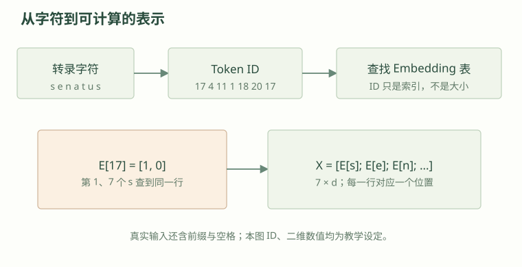
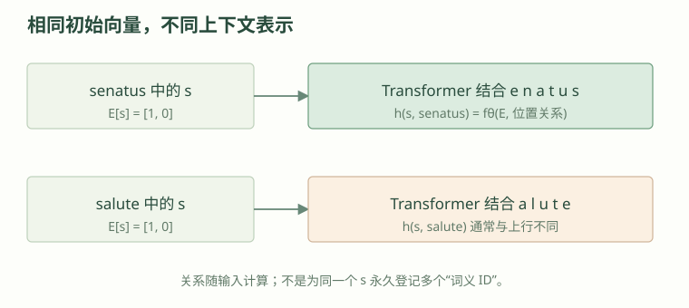
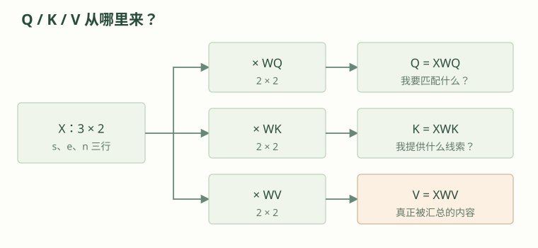
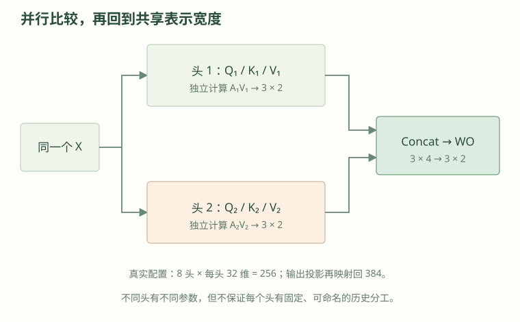
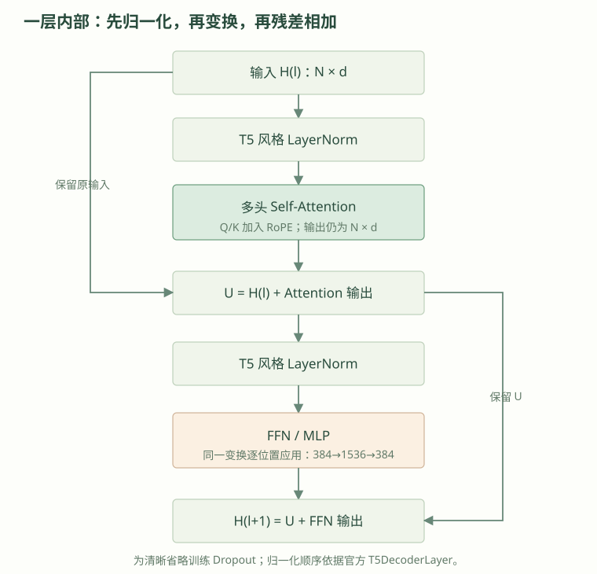
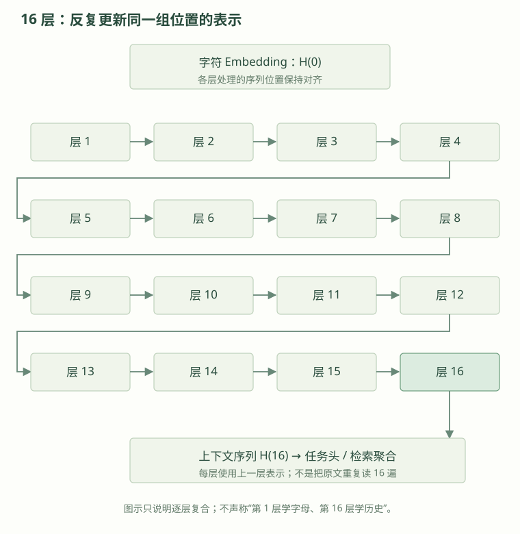
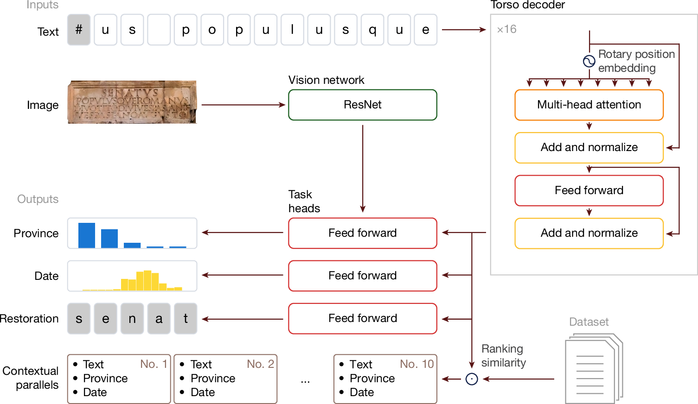
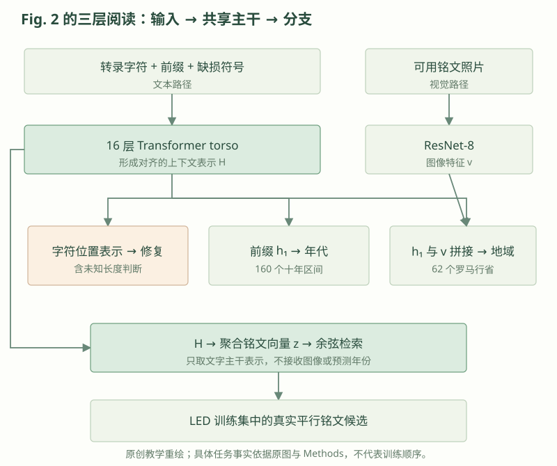
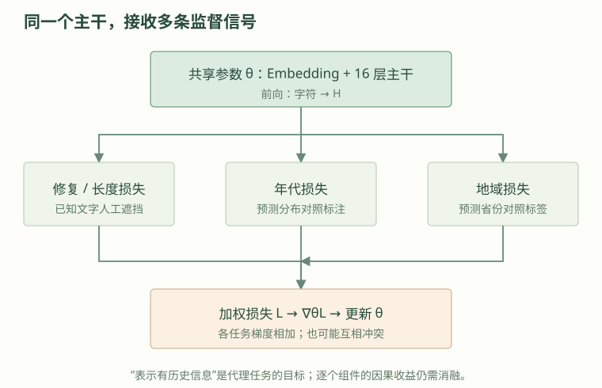
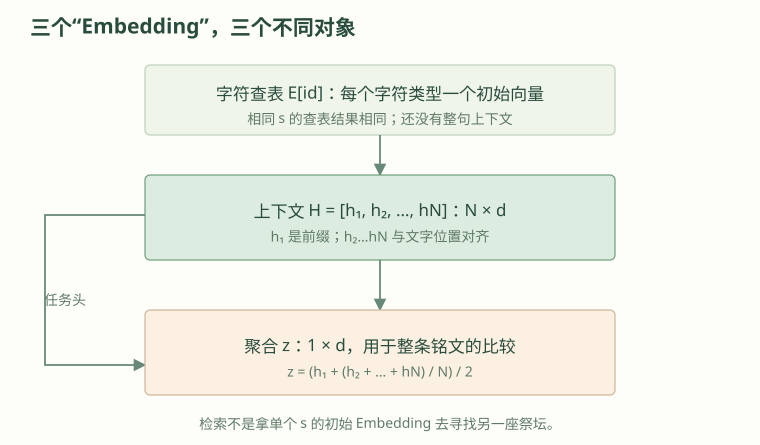

跟着一行字符，
走完 Aeneas 的计算
这一讲只追一条主线：模型怎样把转录文字变成可检索的历史线索？先算清一个 Attention，再把它放回原论文。
先让文字进入计算，再让它读到上下文
第一讲已经知道：我们要为一条铭文寻找值得比较的参照。现在先看真实原图中的一句话：Senatus populusque Romanus（罗马元老院与人民）。为避免数字过多，本讲沿用其中的 senatus（元老院）做演示；它是原图短语的局部，不是完整铭文，也不是美因茨祭坛的转录。
字符 → ID：先给符号一个可查找的地址
机器不能对字母 s 直接做乘加。先建立字表，把每种字符对应到一个整数 ID。空格和缺损符号也可以进入字表。ID 像书架编号：17 号书架并不比 4 号“意思更大”。
为什么用字符级？铭文常有缩写、拼写变体、残缺和未知词。若先切成词，一个词坏掉几个字母就可能难以识别；字符级保留缺口位置，便于逐字修复。代价是序列更长、需要模型自己组合出词句规律。论文采用字符级，下面这段理由是对其任务适配性的技术解释，并非字符级优于一切分词方案的消融结论。

Embedding：一本会在训练中调整的“数字词典”
向量就是一排数字，如 [1,0]。Embedding 表的每一行存一个字符的向量；取出 s 那一行，才有了可以计算的输入。它是模型参数的一部分，训练会调整这些数值，并非人工给 s 写上“元老院”标签。
动手：点两个 s，看看初始表示是否相同
把每个位置的向量叠起来就得到矩阵 X：行数是字符位置数，列数是每个向量的维度。例如 7 个字符、每个 2 维，X 就是 7×2。这是后面所有维度标记的读法。真实配置的字符表示宽度为 384，不要求背诵，但要知道不是两个数。
相同的 s，为什么最后会不一样？
查表只知道“这是什么字符”，不知道“它在这句话里做什么”。如果直接用查表向量检索，相同字母到处相同，模型无法充分区分奉献、墓志或法律文本。Transformer 接过整段字符，根据上下文更新每个位置的表示。

位置关系：既要看到谁出现，也要知道它在哪里
只汇总一堆字符会丢失顺序，就像知道句子里有“老师”和“学生”，却分不清谁在问谁。Aeneas 使用 RoPE（旋转位置编码）：在比较字符时，按位置旋转后面要讲的 Q、K 向量，使比较结果能感知相对位置。这里记住作用即可；不必先推导三角函数。
本课下一节为手算清楚，直接给定投影输入并省略 RoPE、归一化、前缀和为对齐长度添加的空位；这是一台缩小的计算演示机，不是声称真实 Aeneas 只用三个二维字符。
可能追问：Transformer 与 Embedding 是同一个东西吗？
不是。Embedding 可指输入查表向量，也可泛指模型产生的表示；Transformer 是变换这些表示的网络。汇报时应明确是在说“字符初始向量”“上下文向量”还是“铭文检索向量”。
把一次 Self-Attention 算到底
现在只拿 senatus 的前三个字符 s e n，把它们当成一个三位置窗口。Self-Attention 要解决的是：更新当前位置时，应从哪些位置取多少信息？如果每个位置只看自己，就无法用缺口两侧的线索；如果把所有位置同等平均，又会把相关和无关信息混在一起。
为什么必须先有 WQ、WK、WV，才能计算 Attention？
接下来会看到 Q = XW 这类式子，但模型最初只有每个字符位置的输入向量 X。问题是：更新字符 s 时，究竟应该参考谁、又要拿走对方的哪些信息？只拿 X 的向量直接平均，无法分别学习“怎样匹配”和“传递什么”。
W 从哪里来？它们是神经网络的可训练参数。训练开始时按照初始化方法赋值；预测与训练目标产生 Loss，反向传播计算梯度，优化器反复更新这些矩阵。部署推理时通常固定。你在本讲看到的 2×2 数字是人为指定的已训练参数的教学替身，不是由 s、e、n 临时计算出来的。
术语提醒：这里的“投影”指可学习的线性变换，不是几何课里必须保持夹角与长度不变的“正交投影”。另外，本例的 X 是字符 Embedding；到了第二层以后，输入已经是上一层更新过的表示。
别把教学公式误读成源码逐行实现：本讲后面出现的缩放公式写作 Q·K 后除以 √dk；Aeneas 公开的 T5 风格实现把这一尺度放进 Query 投影参数的初始化，点积计算处没有同一条显式除法。二维手算按标准写法解释缩放作用，不声称与已训练模型逐步数值相同。查看官方 Attention 实现
检验：WV 变了、WQ 和 WK 不变，哪一步会改变？
Q/K 的匹配分数和 Softmax 权重不变，但 Value 内容可能变化，所以最后的加权和可能改变。说明“决定关注谁”与“带回什么信息”是分开的。
Q、K、V：同一个输入，做三种不同用途的投影
可以把它想成找资料：Q 是“我现在想找什么”，K 是每份资料的“索引”，V 是匹配后实际读到的“内容”。这只是帮助记忆用途的比喻。它们实际都是向量，来自同一批输入乘上三个可学习矩阵：
不用先补一门矩阵课：[a,b] × [[u,v],[w,z]] = [au+bw, av+bz]。就是把输入两项按不同配方相加，配方里的数字是参数。本例 X 为 3×2，三个 W 都为 2×2，因此 Q、K、V 都是 3×2。

X = [[1,0], [0,1], [1,1]] ← s、e、n 三行
WQ = [[1,0], [0,1]]
WK = [[1,0], [0,2]]
WV = [[1,1], [0,2]]
Q = [[1,0], [0,1], [1,1]]
K = [[1,0], [0,2], [1,2]]
V = [[1,1], [0,2], [1,3]]例如 n 的输入是 [1,1]，乘 WV 得 [1×1+1×0, 1×1+1×2]=[1,3]。Q、K、V 不是三个外部数据库，也不是三段不同文字。
沿着 s 这一行，完成五步计算
点积就是对应数字相乘再相加：[a,b]·[c,d]=ac+bd。这里用 qs 与每个 k 比，得到三个匹配分数。分数还不是概率，可能为负，也不要求加起来为 1。
Attention 计算台 · 每次只解释一步
先保持 s 不动，按“下一步”走到加权汇总；再换 e、n，观察同一矩阵的不同行。
权重在 Softmax 一步出现；此前先理解分数。
缩放为什么除以 √dk？向量很长时，点积的数值幅度容易变大，Softmax 就可能过早接近“只选一个”。用每头 Q/K 的维数 dk 的平方根缩放，有助于控制数值范围。本例 dk=2，除以 √2；真实每头为 32。它不是除以字符个数。
Softmax 做什么？对每个分数取指数，再除以这一行指数的总和：αj=exp(sj)/Σexp(sk)。你只需知道指数把数变成正数、突出较大值，再归一成总和为 1 的权重。本例 exp(0.707)≈2.028，所以权重约为 [0.401,0.198,0.401]。
最后究竟汇总谁？不是 K，而是 V：0.401[1,1]+0.198[0,2]+0.401[1,3]≈[0.802,2.000]。这是教学单头算出的 s 位置上下文汇总结果，并非完整 Transformer 层的最终表示；后面还要经过多头输出投影、残差、归一化与 FFN，更不是直接输出修复的字符。
可能追问：为什么不直接用 X 同时当 Q、K、V？
那也能构造一种简化注意力，但会把“怎样匹配”和“传递什么内容”绑在同一表示上。三个可学习投影给网络更大的表达自由。这是机制解释，不是本文单独验证了三个矩阵各自收益的结论。
可能追问：Attention 权重是不是模型给出的历史解释或正确率？
不是。权重是某层某头某次前向计算的混合系数。0.401 不是“这个字符有 40.1% 概率导致某历史事件”，也不能单凭高权重证明因果。论文案例还使用显著性图，它与这里的 Attention 权重并非同一对象。
把算过的 Attention 放回 Transformer
刚才是一只头的一次信息汇总。它的匹配配方只有一套，可能不够表达不同位置关系。多头注意力让同一输入同时经过几套独立投影；不是把字符分组后各看各的，也不是一个头算完再交给下一个。

从刚才的 s 接着算：切换单头 / 双头
多头为什么可能有用？不同配方可以保留不同的比较结果，输出投影再把它们重新组合。但“某一头专管军职、某一头专管宗教”只能是比喻，论文没有证明这样的固定分工；更多头也不保证一定更好。
Attention 之后，还差哪几件事？
先把三个必要部件补齐，再看整层。FFN（逐位置前馈网络）给每个位置做一次相同的非线性加工，像把汇总来的资料进一步整理；Attention 负责位置间交换，FFN 负责每个位置内部加工。
一次线性变换只是按配方相加，多叠几次仍然可合成一个线性变换。中间加入非线性，网络才能表达更复杂的组合。Aeneas 的 FFN 中间宽度为 1536，随后回到 384；它没有把字符位置数变成 1536。
Residual（残差连接）把旧表示加回新信息：如果原来是 [1,0]、增量是 [0.8,2]，相加得 [1.8,2]。这样保留原信息，也给训练梯度一条直接通路。LayerNorm（层归一化）则调整一个位置内部向量的尺度，让下一步运算更稳定；它不是把整篇文章平均成一个数。T5 风格使用按均方根缩放的变体，此处只需掌握其稳定数值的作用。

Hnext = U + FFN(Norm(U))
为什么论文写「Add and normalize」，代码图却先 LayerNorm？
你刚看到的层图与论文原图次序不同，这不是你看错了。论文 Fig. 2 是整体结构示意，它把 Attention、FFN 与 Add and normalize 概略画在一起；官方代码实现采用 Pre-Norm 次序，会在进入 Attention 和 FFN 之前先做归一化。
Attention
↓
Add and normalize
↓
FFN
↓
Add and normalize
读整体结构很方便，但不能直接当作实现中的逐行执行顺序。LayerNorm → Attention
↓
加回原始输入
↓
LayerNorm → FFN
↓
加回上一中间结果
图省略 Dropout；代码还在 Attention 的 Q/K 计算中施加 RoPE。图里的两条绕路箭头是什么？就是前面说的残差旁路：绕过当前子模块，把旧表示原样送过去相加——正因如此，两边形状必须一致，FFN 做完要先回到 N×384。
这是图示抽象层次的差异，不是 Aeneas 的核心创新；复现执行顺序时以代码为准。核对 T5DecoderLayer
检验：原论文图和代码图是否一定有一张“完全错了”？
不能这样判断。论文图要介绍模型组件，代码图要展示执行步骤。它们在归一化的表现上确实有差异；复现执行顺序时应以实际代码为准，并在教学材料中明确标注，不把两幅图说成逐项一致。
384、8×32、256、1536：到底各在数什么？
请先抓住两种绝对不同的数量：N 是序列里有多少个位置（有多少行），d 是一个位置有多少个特征数（有多少列）。这两个方向在矩阵里是垂直的，不要混在一起。
例如只输入教学字符 s e n，暂时 N=3。真实 Aeneas 会在文本前添加一个起始符号，所以这三个字符在正式模型中至少对应 N=4。无论 N 是 3、4 还是更多，1536 永远描述 FFN 的中间特征宽度，不是 N。
本图尺寸取自公开 config_latin.py、T5DecoderLayer 与 MlpBlock；论文 Methods 对主干输出的措辞与实现的出入，见下一小节末的“实现核对”，此处不猜测作者原意。查看配置
检验：为什么 8×32 不需要等于 384？
因为 32 是每个头的投影宽度，8 个头合起来是 256 维，然后用一个可学习的输出投影矩阵将 256 维映射回主干的 384 维。它们不必通过简单均分对应。
为什么一层不够？16 层在重复什么？
第一层已能访问整段文字，不能说“必须堆 16 层才能看到远处字符”。多层的意义是上一层已经组合过的信息，可以成为下一层重新比较、加工的材料。就像先整理句内线索，再拿整理后的线索重新核对整段内容；但这是理解复合计算的比喻，不是逐层语义分析结果。

可能追问：Aeneas 的 decoder 和 GPT 有什么区别？
原文事实：作者称它为 T5 衍生的 transformer decoder。实现证据：公开 T5DecoderLayer 的 mask 由有效位置构造，没有 GPT 那种阻挡右侧文字的因果三角遮罩，所以可结合缺口两侧。它也没有传统 encoder–decoder 的跨注意力输入。修复从高置信缺口迭代并支持未知长度搜索，不等于 GPT 标准的从左到右 next-token 生成。decoder 是作者对模块的命名，不能据此推断因果注意力。
先读完整 Fig. 2，再定位每条数据流
现在才进入完整架构。主干（torso）就是大家共用的表示加工网络；任务头（head）是从这些表示产生特定答案的小网络。注意：这里的“任务头”与上一节并行计算的“注意力头”是两种不同概念。

先在原图认出左上输入、右侧 torso、中部任务头、左侧输出和底部检索。下面的定位按钮告诉你在原图哪里找、那条线传递什么；随后再用原创简化图核对。没有读懂一条线之前，先不背全图。

四个任务头分别输出什么？
| 任务 | 读哪份表示 | 输出与作用 |
|---|---|---|
| 字符修复 | 缺损位置 ht | 字符分布；已知缺多少字时补字。 |
| 未知长度判断 | # 所在位置的表示 | 判断一个还是多个字符仍缺失，帮助搜索决定保留或移除 #。 |
| 年代归属 | 前缀位置 h₁ | 800 BCE–800 CE 范围的 160 个十年区间分布，不是直接输出一个精确年份。 |
| 地域归属 | 前缀 h₁ + 可用图像特征 | 62 个罗马行省的分布。 |
前缀 h1 到底是谁？它是第 1 层，还是第 1 个字符？
两者都不是！h1 指模型在文字前额外放置的起始符号（SOS）经过全部 16 层 Torso 后，在“第一个序列位置”得到的向量。它并不是原铭文的第一个拉丁字母，也不是第 1 层 Transformer 的输出。
它为什么能代表整段？关键在于 SOS 也参与 Self-Attention，而这里没有只允许看左侧的因果遮罩——这个位置因此能把后面的整段文字吸收进来。
用于年代、地域等整段归属预测；有图片时地域头还会合入图像特征。
用于对应位置的字符修复。模型仍需要逐位置表示，不能只保留 h1。
符号提醒：若以 H⁽¹⁶⁾ 表示第 16 层输出矩阵，则 h₁ = H⁽¹⁶⁾[位置1]（数学上从 1 计数）；官方 Python 代码中就是 x[:, 0, :]（从 0 计数）。检索向量 z 还需要从多位置表示聚合，它不是直接等于 h1。查看 SOS 数据处理
检验：只有三个字母 s、e、n，Torso 的第一个输出 h₁ 对应谁？
对应额外添加的 SOS 起始位置。s 的表示是 h₂，e 是 h₃，n 是 h₄。h₁、h₂ 等下标表示“位置”，而上标 16 才表示“第 16 层”。
前缀是加在文字前的专用位置，它也会参考整段上下文；训练要求这个位置服务年代和地域任务，因此可形成整段摘要。它并非一开始就“知道全句”。修复头则仍需每个缺口位置的信息，不能只用一个整句向量代替。
图像为什么只接地域？
照片先经过 ResNet-8，可以把它理解为从图像中提取形状、纹饰等可用线索的网络；本讲不需要拆它的卷积细节。提取出的向量与文字前缀表示合并，供地域头判断。
论文说明：修复评测会人为遮住转录文字，照片可能仍保留那些字，接图像会泄漏答案；断代实验未观察到显著收益，所以没有使用图像。检索公式只取文字主干输出，而图像是在后面地域头才合入，因此检索也不直接读图。这不等于图像对所有断代研究都无用。
可能追问：是不是先修复，再断代，再地域，最后才能检索？
不是固定的串行流水线。共享主干产生表示后，各头可以分支预测，检索也从主干聚合。修复搜索自身可能多次前向计算并更新候选文本，但这不把所有任务强制排成顺序。
Loss 如何让多个任务塑造同一个主干
到目前为止，我们是假设参数已经存在，在算“模型怎么用”。现在才问这些数从哪里来：训练是用已有参考答案调整参数，推理是用调整好的参数处理新输入。
先把 Loss 和梯度讲成一件可检查的事
Loss（损失）是用一个数衡量预测偏离训练目标的程度。例如人工遮住 senatus 的 e，让输入成为 s?natus；参考答案是 e。模型给正确字符 e 的概率只有 0.2，交叉熵损失 −ln(0.2)≈1.609；提高到 0.8 时损失约 0.223。只需理解：正确答案分到的概率越大，这项损失越低。
梯度告诉我们“参数往哪个方向小幅改动，会让损失下降”。反向传播就是沿刚才的运算链，把这个调整信号算回各个参数；不是倒着生成文字，也不是人工逐层指定意义。Embedding 表、Q/K/V 矩阵、FFN 和任务头都可能被更新。
想算一点：一次更新是什么样？（不要求推导微积分）
在没有标签平滑的单位置 Softmax + 交叉熵简化例子中，正确类原始分数的导数为 p−1。p=0.2 时是 −0.8；若直接把这个分数当可调量，用步长 0.1 更新：新分数 = 旧分数 − 0.1×(−0.8) = 旧分数+0.08。真实训练调整的是产生分数的参数，并使用 LAMB 优化器、标签平滑等；这个例子只解释“沿梯度减小 Loss”的方向。
切换：训练多了哪两步？
多任务：多个老师，共同修改一本表示“词典”
同一条训练铭文既可用人工遮挡教修复，又可用可用标注教地域和年代。每个任务头有自己的参数，但它们前面的主干是共享的。可以类比几个老师对同一份笔记提出修改意见：文字老师关心能否补字，年代与地域老师关心哪些线索能帮助归属。

| 监督 | 误差信号怎样来 |
|---|---|
| 修复 | 人工遮挡的字符有参考答案，用字符预测损失学习补字。 |
| 未知长度 | 判断 # 是否还含多个字符，用二元交叉熵学习继续扩展还是结束。 |
| 地域 | 可用的行省标签与预测分布比较，使用分类交叉熵。 |
| 年代 | 参考常是日期区间，用 KL 散度比较预测分布与目标分布；KL 可先理解为两份概率分布的不一致程度。 |
对共享参数 θ，来自各任务的梯度按同样系数相加。例如某参数收到两条加权后梯度 +0.6 和 −0.2，合起来是 +0.4，再由优化器决定更新。它们也可能互相冲突，所以多任务不是任务越多越好；最终收益需要实验。
为什么这样训练，检索可能更有历史信息？
能够区分年代、地域并恢复语句的表示，可能保留拼写、制度称谓、语言惯例等历史线索。之后用这份表示比较铭文，就不只比较字面重合。作者用这些铭文学任务作为代理监督，没有为所有“历史相关铭文对”逐一标注答案。
合理解释：不同任务可能帮助共享表示兼顾语言与历史线索。证据边界：人机实验支持检索结果有辅助价值，UMAP 提供表示空间的观察；它们不能单独量化“某一任务到底提高多少检索效果”。逐任务消融与更全面检索基线仍有待补足。
可能追问：为什么推理不需要每次重新训练？
训练已经把大量样本的规律压进固定参数。新输入改变的是前向计算的结果，不是这些参数本身。类似用学会的解题方法算新题；不必每做一题就重写整本教材。修复的多步搜索可能多次调用模型，仍不等于反向训练。
从一串上下文向量，到可供考证的真实材料
我们终于可以区分三个经常都叫 Embedding 的东西：字符查表向量、主干输出的上下文序列、以及整块铭文用于检索的单个向量。从“每个位置一行”到“每块铭文一行”，需要聚合。

把论文的检索公式也算一次
h₁ 是服务年代、地域的前缀位置表示，后续位置参与文字修复。作者把它们融合成一条检索向量。没有把输出的“公元 214 年”“Germania Superior”标签拼进去，也没有把四个任务头的概率分布拼在一起。
为把手算收尾，假设前缀和三个字符经主干后得到：h₁=[2,0]，三个字符表示为 [1,0]、[0,1]、[1,1]。这里重新假设了最终表示，不是声称前面的 Attention 已算出 16 层输出。N=4，字符项为 [2,2]/4=[0.5,0.5]，故 z=([2,0]+[0.5,0.5])/2=[1.25,0.25]。
再与数据库候选比较。余弦相似度只比较方向：cos(z,d)=(z·d)/(‖z‖‖d‖)，向量长度就是这排数字的几何长度。若 dA=[1,0]、dB=[0,1]，可算得 A 约 0.981、B 约 0.196，所以 A 排在前面。数值是相似分数，不是历史相关的概率。
直观看余弦：只改变方向
查询 q 固定指向右；这是二维几何，不是模型真实降维结果。
数据库里每条训练集铭文的向量可以预先算好。查询只需用同一个模型得到 z，再与候选向量比较、排序、返回真实文字和元数据。检索没有额外生成一段“看似真实”的铭文充作史料，也不自动证明两条记录存在传播、借鉴或同源关系。
讲贡献之前，先知道指标到底在测什么
本讲只补上汇报必须掌握的判断，完整实验阅读仍留在后续课程规划中。
| 证据 / 指标 | 可以怎么讲 | 不能推出什么 |
|---|---|---|
| CER、Top-20 | CER 是修复与参考答案的字符编辑误差，越低越好；Top-20 看正确修复是否进入前 20 个候选。Table 2 还按缺损长度分层平均。 | 修复 Top-20 不是“历史检索前 20 条的准确率”。 |
| 地域 Top-1 / Top-3 | 62 个行省中，正确省份是否排第 1 或前 3；Table 2 Aeneas 为 72.3% / 83.9%。 | 不是现代 GPS 精确定位，也不是普适于所有地区。 |
| 年代距离 | 预测均值落在参考区间内记 0，否则算距最近边界的年数；Table 2 平均 13.4 年。 | 区间很宽时也可能记 0，不代表精确到某一年。 |
| Table 1 人机研究 | 23 位历史研究者参与；加入平行铭文与模型预测后，论文报告修复与地域任务的人机协作收益。 | 与 Table 2 的全自动评估不同，不能把两表数值混成一套排名。 |
| 75% / 90% | 分别对应仅给平行铭文、再给预测时，受试者反馈可作为研究起点的比例。 | 不是“检索准确率 90%”，更不是历史联系得到证明的比例。 |
Table 2 的未知长度修复 CER 为 66.1%，已知长度为 40.5%：难度增加后明显变差。不要把正文笼统的“15%”表述当作这两格 CER 的直接差值，也不要隐去这一代价。
可能追问：论文还没有充分证明什么？
没有通过完整逐组件消融，独立确认每个任务、每层或每个注意力头对检索的贡献；不能从 UMAP 图直接读出高维检索质量；人机实验规模与限时流程不能代表所有史学研究；拉丁铭文数据和既有标注会带来分布与标注偏差。案例支持可用性，不足以证明任何一条相似关系的历史因果。
三道测验：先作答，再看解释
按问题、方法、证据组织汇报
这份提纲帮助你把已学内容讲出来，并不表示第三至第六讲已经发布。上台主讲流程，完整手算保留一行，详细矩阵可放备份页。
- 0–3 分钟：历史问题。用美因茨案例区分“读出文字”和“找到参照”；说明结果是研究起点。
- 3–6 分钟：整体方法。展示完整 Fig. 2，先指出文本主干、四头与检索，再解释图像只接地域。
- 6–11 分钟：机制。沿 senatus 讲 ID→Embedding，用 s 的一行解释 Q/K/V、Softmax 和 V 汇总；用一张完整层图收束多头、FFN、残差、16 层。
- 11–14 分钟：为什么能用于历史检索。损失→梯度→共享表示；按论文公式聚合，不拼预测年份。
- 14–18 分钟：实验与代价。区分两张表；解释 CER、地域准确率和年代区间距离；指出 90% 是用户反馈、未知长度修复更难。
- 18–20 分钟：贡献与局限。强调历史工作流的任务设计与验证，说明没有完整消融、相似不等于历史证明。
合上页面试讲：能否不念术语，从 s 的输入解释到真实铭文候选？能否指出原图中“没有”的图像→检索路径？如果仍卡住，返回对应计算，而不是增加更多术语。
原文、实现与教学边界
- Assael et al., Nature 645, 141–147 (2025)：正文、Fig. 2；Methods 的 Aeneas’ architecture、Training Aeneas、Aeneas’ contextualization mechanism 和 Task metrics。
- 官方 model.py：T5DecoderLayer、非因果有效位 mask、Pre-norm、图像仅融合地域、torso_output。t5_layers.py：RoPE 和 Attention；config_latin.py：384 / 1536、16 层 / 8 头配置。实现解释不替代论文实验。
- 原图来源与许可记录。本讲 Fig. 2 完整原样展示；原创教学 SVG 独立绘制。所有 ID、二维参数、权重、更新例子均非真实 Aeneas 输出；真实配置与模拟维度明确分开。
第三至第六讲仍为规划
后续将继续精读架构、搜索、实验及完整答辩材料。当前先把前两讲的方法链路学扎实。